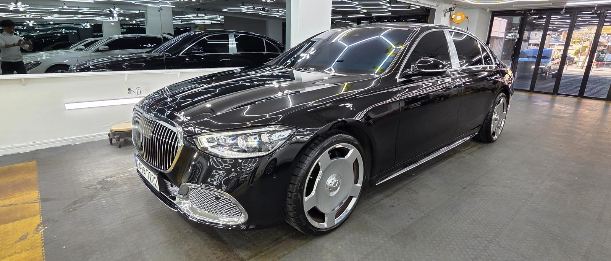
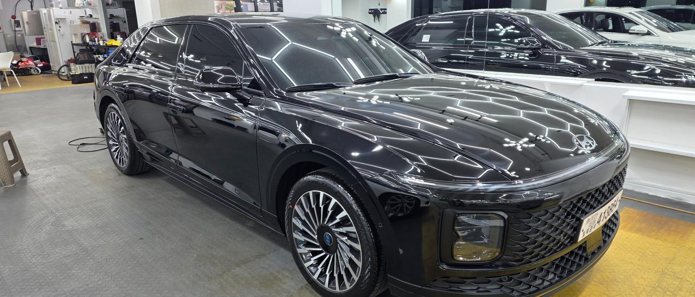
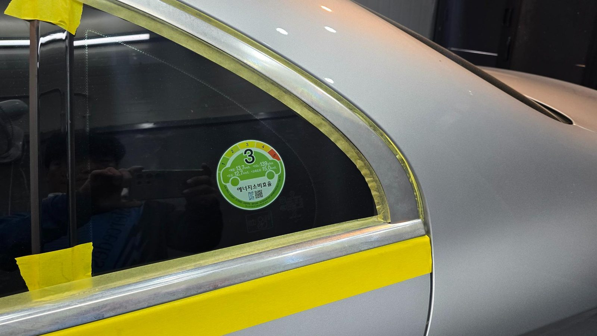
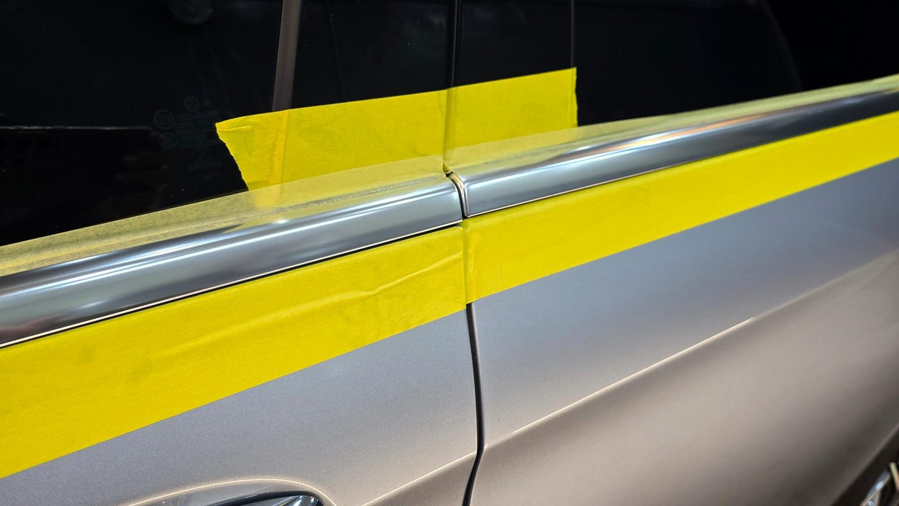
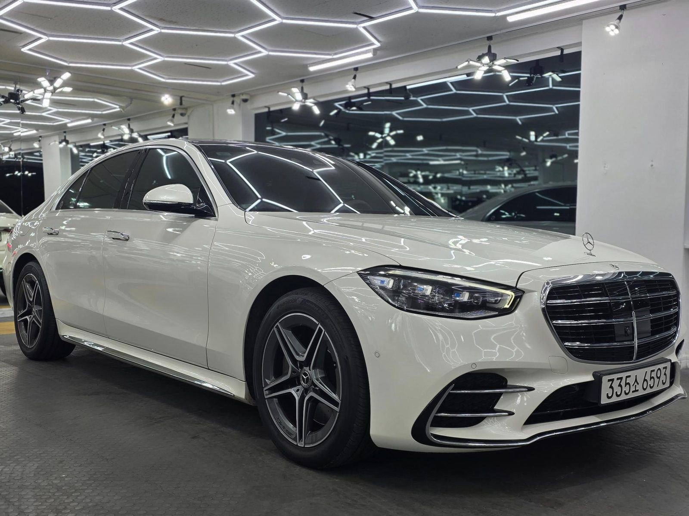
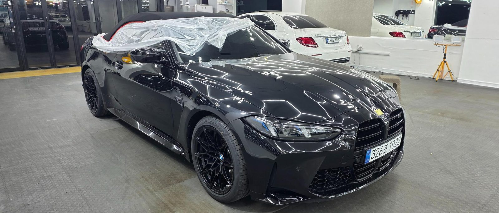
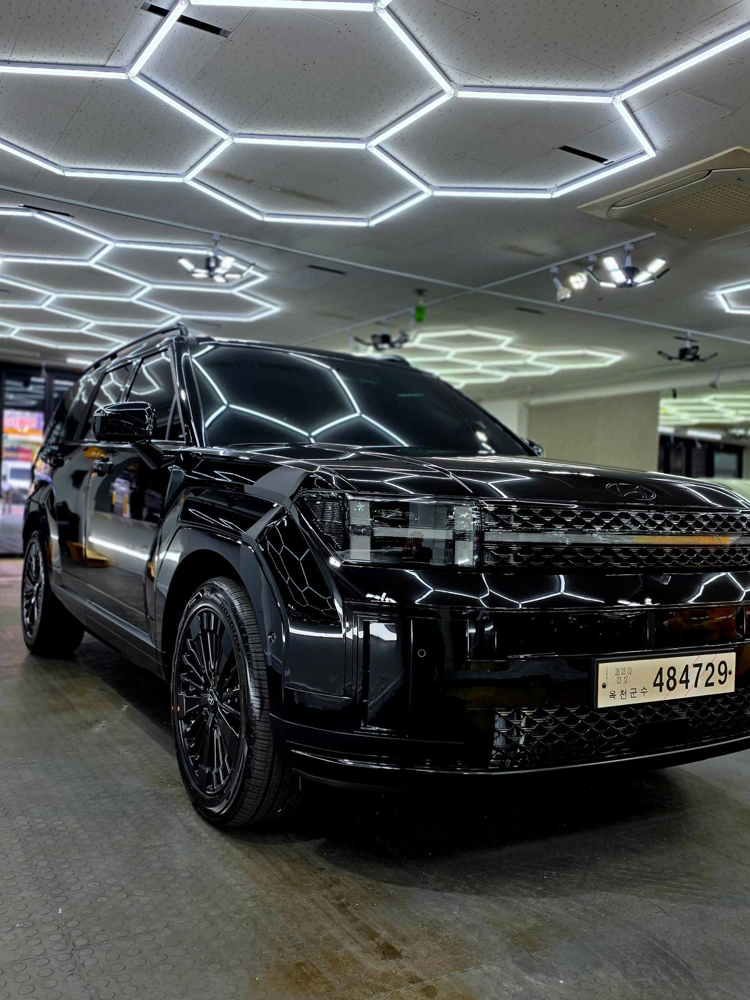

PREMIUM SERVICES

생활 스크래치, 스월마크, 워터스팟을 완벽하게 제거하고 도장면 본연의 맑고 깊은 광택을 끌어올립니다. (백범퍼 흠집 제거 전후 사진)

자체 개발/생산한 최고급 세라믹 코팅제를 아낌없이 시공하여, 최상의 방오성과 슬릭감으로 차량을 보호합니다.


수입차 창틀 알루미늄 몰딩의 고질적인 백화현상을 깔끔하게 복원하고, 전용 코팅제로 재발을 방지합니다.
우천 시 시야 확보를 방해하는 유막을 완벽하게 제거하고, 초발수 코팅을 통해 안전하고 쾌적한 주행 환경을 제공합니다.

최고급 가죽 전용 코팅제를 사용하여 이염, 스크래치, 갈라짐을 방지하고 신차 고유의 매트한 질감과 색상을 오랫동안 유지합니다.

오픈카 소프트탑 전용 프리미엄 발수 코팅제로 빗물과 오염물의 스며듦을 완벽 차단하고, 자외선으로 인한 직물 변색을 예방합니다.

내시경 카메라를 활용한 정밀 에바크리닝으로 에어컨 깊숙한 곳의 곰팡이와 악취 원인을 근본적으로 제거하여 쾌적한 실내를 만듭니다.
사진을 클릭하면 크게 볼 수 있습니다